✧ Теорія:
2D масиви - це...
▶
Чому ми це вчимо?
Багато комп'ютерних ігор та додатків використовують матриці або таблиці для зберігання даних. Наприклад, поле для гри в шахи, інвентар гравця у Minecraft, карта рівня або поле для "хрестиків-нуликів" — усе це двовимірні структури. Для комп'ютера такі матриці зазвичай задаються як набір значень, де кожна цифра або символ відповідає за стан певної клітинки (наприклад: 0 — порожнеча, 1 — стіна тощо). Щоб зручно зберігати, обробляти та змінювати такі структури, програмістам потрібен інструмент, який дозволяє працювати з даними у вигляді таблиці. Цим інструментом є двовимірний масив.
Що таке двовимірний масив?
Двовимірний масив — це масив, який містить інші масиви як свої елементи. Тобто він складається з рядків (горизонтальних ліній) та стовпців (вертикальних колонок), що нагадує таблицю, координатну сітку або математичну матрицю.
Для створення двовимірного масиву в JavaScript використовується принцип вкладеності. Ми створюємо один головний (зовнішній) масив за допомогою квадратних дужок, а всередині нього, через кому, перелічуємо інші (внутрішні) масиви. Кожен такий внутрішній масив діє як окремий рядок нашої таблиці. Під час написання такого коду найважливіше — уважно стежити за тим, щоб кожна відкрита дужка мала свою пару, а елементи були розділені комами.
const matrix = [
[1, 2, 3], // рядок 1
[4, 5, 6], // рядок 2
[7, 8, 9], // рядок 3
];
console.log(matrix);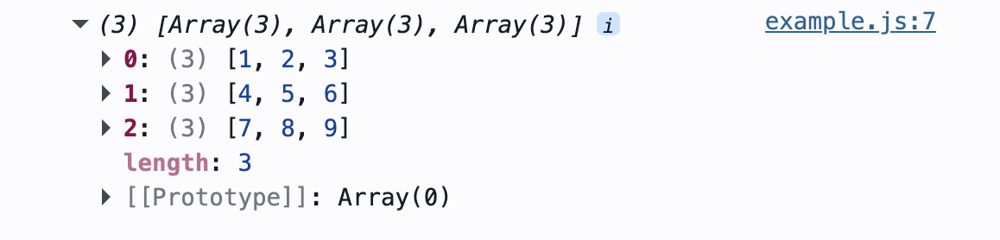
Розмір масиву
Насправді, JavaScript дозволяє створювати так звані "зубчасті" масиви. Це означає, що кожен рядок може мати різну кількість елементів. Наприклад, у першому рядку може бути 2 числа, а в другому — 5, і це не буде помилкою.
const jaggedArray = [
[1, 2],
[1, 2, 3, 4, 5],
[1]
];Але, не у всіх мовах програмування є можливість створювати масиви з рядками різного розміру. Крім того, 2D масиви часто використовуються для створення карти рівнів для ігор (таких як Хрестики-Нулики, Pac-Man, Морський Бій тощо), і зазвичай вони є саме прямокутними або квадратними, а не зубчастими. Тому протягом цього курсу візьмемо за правило створювати масиви з рядками однакової довжини.
Форматування коду
Для комп'ютера не має значення, чи записаний весь масив у довгий суцільний рядок, чи розбитий на частини. Він прочитає його однаково правильно. Проте для людини читати такий текст буде незручно. Тому заведено використовувати перенесення рядків — кожен внутрішній масив записується з нового рядка, строго один під одним.
const badFormatting = [[0,1,1,0],[1,0,0,1],[1,0,0,1],[0,1,1,0]];
const goodFormatting = [
[0, 1, 1, 0],
[1, 0, 0, 1],
[1, 0, 0, 1],
[0, 1, 1, 0],
];Тести
Перевір свої знання
Яка синтаксична помилка допущена під час створення цього масиву?
const level = [
[1, 1, 1]
[0, 2, 0]
];Відповідь
Пропущена кома між внутрішніми масивами.
✦ Завдання 1
▶
Тематика завдання
У цій практичній частині ми перетворимо числа на піксельні малюнки. Ти завантажиш готовий скрипт, який вміє читати двовимірні масиви і перетворювати кожну цифру на кольоровий квадратик (піксель) на екрані. Твоє завдання — "намалювати" ці малюнки за допомогою чисел.
Матеріали до завдання
Натисни на кнопку нижче, щоб завантажити архів із файлами до завдання. Розпакуй його та відкрий папку в редакторі коду. Всі свої команди ти будеш писати у файлі script.js, а результат бачитимеш на сторінці (відкрий index.html в браузері).
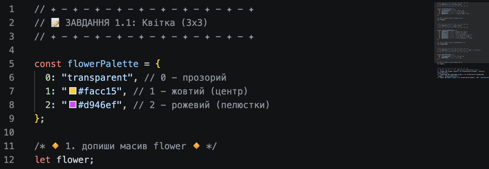
Завдання
Завдання 1.1: Квітка
Намалюймо просту квітку в сітці розміром 3 х 3 (3 рядки, 3 колонки). Твоє завдання — заповнити масив flower правильними цифрами, щоб вийшов малюнок, як на картинці нижче.
Палітра кольорів:
- 0 — порожнеча (прозорий фон)
- 1 — жовтий (центр квітки)
- 2 — рожевий (пелюстки)
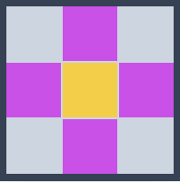
Завдання 1.2: Пейзаж
Створимо пейзаж: сонце, дерево та траву. Заповни масив landscape розміром 5 х 5 потрібними цифрами, орієнтуючись на малюнок.
Палітра кольорів:
- 0 — блакитний (небо)
- 1 — жовтий (сонце)
- 2 — темно-зелений (листя дерева)
- 3 — коричневий (стовбур дерева)
- 4 — світло-зелений (трава)
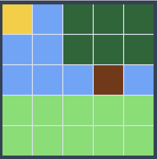
Завдання 1.3: Сердечко (HP)
Намалюємо класичний індикатор "життів" з відеоігор — сердечко! Тут сітка буде не квадратною: масив heart має розмір 6 рядків та 7 колонок. Повтори малюнок за допомогою чисел.
Палітра кольорів:
- 0 — порожнеча (прозорий фон)
- 1 — червоний (саме сердечко)
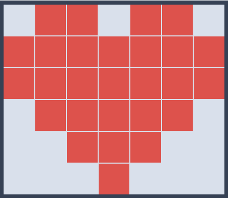
Очікуваний результат:
Якщо ти правильно заповниш усі три масиви, твоя сторінка в браузері виглядатиме ось так:
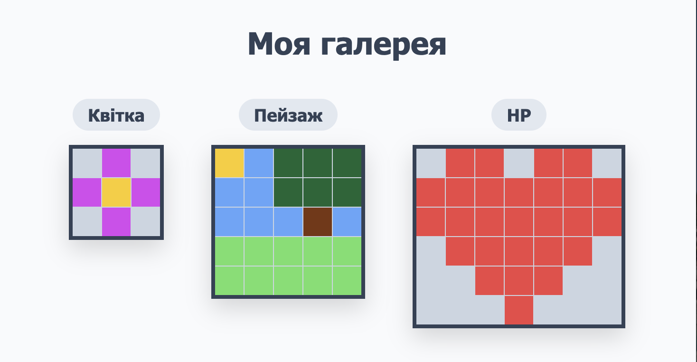
✧ Теорія:
2D масиви та індекси
▶
Чому ми це вчимо?
Як комп'ютер розуміє, де на карті знаходиться стіна, а де — рівна дорога? Або як він знає, що зілля лежить саме в третій комірці інвентаря? Усе просто: він "бачить" ці дані як велику таблицю. І щоб дізнатися, що сховано в конкретній клітинці цієї таблиці, або покласти туди новий предмет, комп'ютеру потрібна її точна адреса. У масивах такі адреси називаються індексами.
Координати Y та X
У математиці ми звикли, що координати починаються з X (горизонтальна вісь), а потім йде Y (вертикальна). Але у двовимірних масивах усе навпаки. Щоб знайти клітинку, ми спочатку обираємо рядок (Y), а вже потім шукаємо потрібну колонку (X). Тому правильний запис завжди виглядає так: назва_масиву[номер_рядка][номер_колонки]. Уяви пошук квартири: спершу ти піднімаєшся на потрібний поверх (рядок), і лише потім йдеш коридором до потрібних дверей (колонка).
const inventory = [
["⚔️", "🛡️", "🧪"], // Рядок 0: Спорядження
["🍎", "🍕", "🍩"], // Рядок 1: Їжа
["👒", "🧣", "🧦"], // Рядок 2: Одяг
];
// Виводимо у консоль весь другий рядок (з індексом 1)
// Ми ніби відкриваємо тільки одну полицю з їжею
console.log("Food:", inventory[1]);
// Дістаємо пончик: спочатку заходимо на полицю [1],
// а потім беремо предмет на позиції [2]
console.log("Donut:", inventory[1][2]);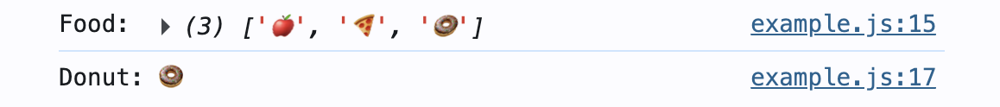
Зверни увагу: якщо написати лише одну пару квадратних дужок з індексом, комп'ютер видасть тобі цілий внутрішній масив, тобто весь рядок. А щоб дістати один конкретний елемент із цього рядка, потрібно додати другу пару дужок і вказати точну позицію цього елемента в рядку.
✨ Важливо: індекси у програмуванні завжди починаються з нуля.
Ось як виглядають "адреси" (індекси) кожної клітинки у масиві 3х3:
[0][0] [0][1] [0][2] // Рядок 0
[1][0] [1][1] [1][2] // Рядок 1
[2][0] [2][1] [2][2] // Рядок 2Зміна елементів
Читання — це лише половина справи. Найцікавіше починається, коли ми беремо вже створену карту і починаємо її змінювати. Щоб помістити новий предмет у клітинку, ми просто вказуємо її координати і через знак дорівнює присвоюємо їй нове значення. При цьому комп'ютер перезапише в масиві старе значення на нове.
// Створюємо порожню ділянку 2x2, де скрізь росте трава
const map = [
["🌱", "🌱"], // Рядок 0 (верхній)
["🌱", "🌱"], // Рядок 1 (нижній)
];
// Садимо соняшник: верхній рядок [0], друга клітинка [1]
map[0][1] = "🌻";
// Садимо тюльпан: нижній рядок [1], перша клітинка [0]
map[1][0] = "🌷";
console.log(map);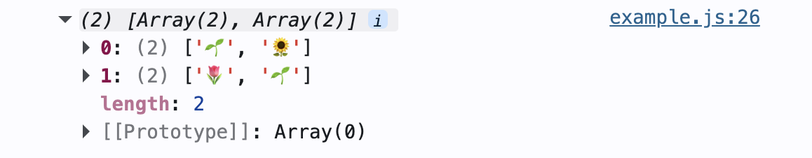
Методи push та pop
Ми можемо використовувати вже знайомі вам методи push() та pop() із двовимірними масивами, але вони працюють на двох рівнях:
- Якщо застосувати метод до головного масиву, ми додаємо або видаляємо цілий рядок.
- Якщо спочатку вибрати рядок за індексом, а потім застосувати метод, то додасться або видалиться один елемент у цьому рядку.
const garden = [
["🌻", "🌻"],
["🌷", "🌷"],
];
// Видаляємо останній рядок
garden.pop();
// Додаємо новий рядок в кінці масиву
garden.push(["🌸", "🌸", "🌸"]);
// Додаємо одну квітку в 1-й рядок
garden[0].push("🌻");
console.log(garden);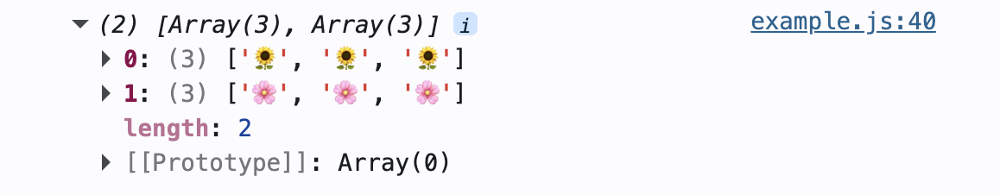
Методи shift та unshift
Ці методи працюють схоже на push та pop, але вони змінюють масив на самому початку:
- shift() — видаляє перший рядок (або перший елемент у рядку).
- unshift() — додає новий рядок (або елемент) у самий початок.
const farm = [
["🐄", "🐄"],
["🌾", "🌾"],
];
// Видаляємо перший рядок
farm.shift();
// Додаємо курей як новий перший рядок
farm.unshift(["🐓", "🐓"]);
// Видаляємо курку на початку першого рядка
farm[0].shift();
// Додаємо собаку на початок першого рядка
farm[0].unshift("🐕");
console.log(farm);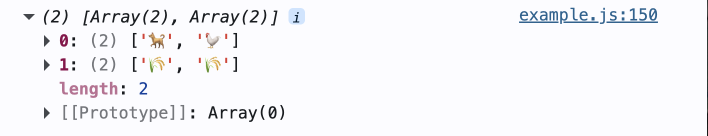
Метод splice
Метод splice() дозволяє видаляти, додавати або замінювати елементи в будь-якому місці масиву.
// для зміни цілого рядка (або кількох рядків):
масив.splice(індекс_початку, кількість_видалення, нові_елементи);
// для зміни елементів в одному рядку:
масив[індекс_рядка].splice(індекс_початку, кількість_видалення, нові_елементи);const forest = [
["🌲", "🌲", "🌲", "🌲", "🌲"],
["🌲", "🌲", "🌲", "🌲", "🌲"]
];
// У першому рядку (індекс 0),
// починаючи з 2-ї позиції (індекс 1),
// видалимо два дерева (2)
// і додамо замість них гриби ("🍄", "🍄"):
forest[0].splice(1, 2, "🍄", "🍄");
console.log(forest);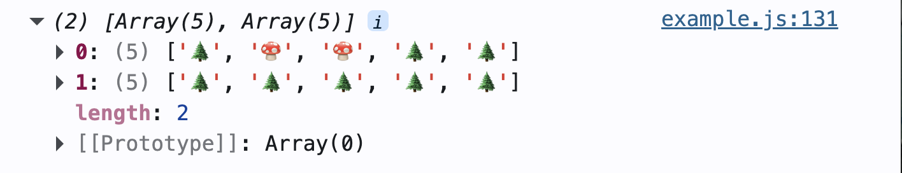
Тести
Перевір свої знання
1. Який саме смайлик виведеться в консоль і чому?
const map = [
["👾", "🏡", "🍏"],
["🌱", "🍕", "🛸"]
["🍩", "🌻", "✨"]
];
console.log(map[1][1]);Відповідь
Виведеться піца 🍕. Бо індекси починаються з нуля.
2. Що пішло не так? Ми хотіли покласти торт 🍰 на полицю поруч з яблуками, але код спрацював неправильно.
const inventory = [
["🍎", "🍎"]
];
inventory.push("🍰");Відповідь
Цей код додає меч як окремий елемент у головний масив, а не всередину рядка з яблуками. Щоб додати меч саме в перший рядок, потрібно було звернутися до нього за індексом: inventory[0].push("🍰");
✦ Завдання 2
▶
Тематика завдання
Багато популярних ігор, наприклад симулятори фермерства, використовують тайлмапи (tilemaps) — це коли світ (мапа гри) складається з однакових квадратних плиток (тайлів). У цьому завданні ти працюватимеш із готовою, але поки що порожньою картою світу, збереженою у двовимірному масиві map. Твоя мета — "заселити" її новими об'єктами за допомогою індексів та методів масиву.
Матеріали до завдання
Завантаж архів, розпакуй його та відкрий папку в редакторі коду. Всі свої команди ти будеш писати у файлі script.js, а результат бачитимеш на сторінці (відкрий index.html в браузері).
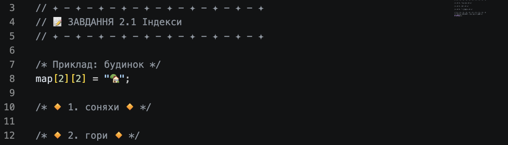
Завдання
Завдання 2.1: Індекси
Масив map (мапа) має 5 рядків та 5 колонок, і спочатку там лише росте трава і є самотній будинок. Використай двовимірні індекси, щоб заповнити цю мапу різними елементами (смайликами).
-
Соняхи. Посади поруч із будинком
кілька соняхів (🌻):
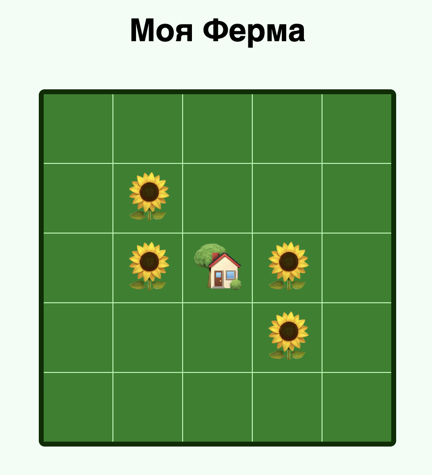
-
Гори. Уздовж правого краю карти
додай гори (🏔️):
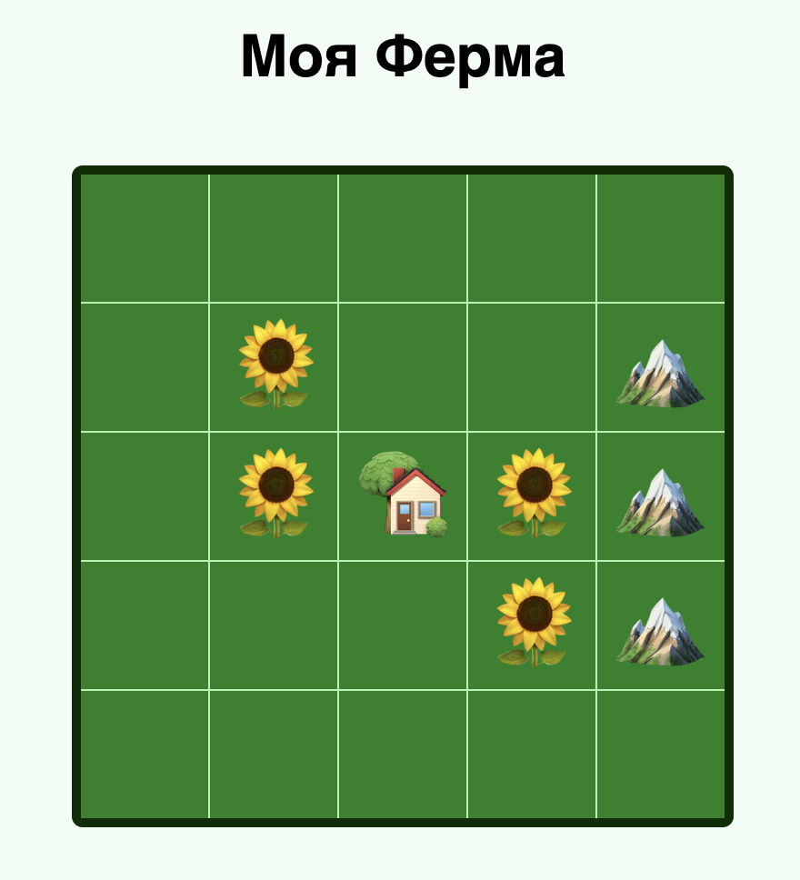
-
Фермери. Уздовж лівого краю
карти додай сімʼю фермерів, що вийшли збирати врожай (🧑🌾,
👩🌾, 👨🌾):
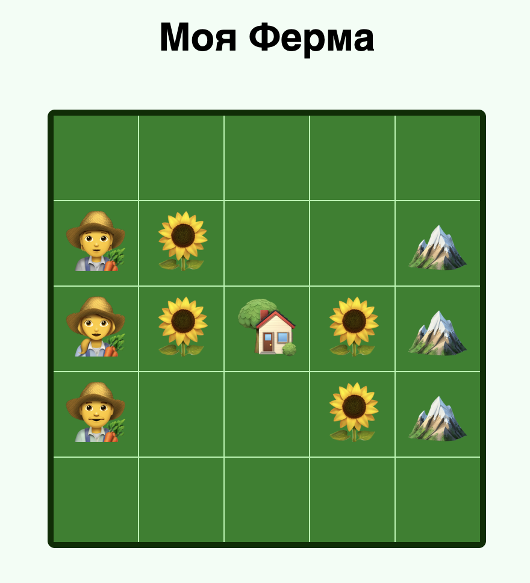
Завдання 2.2: Методи масиву
У цьому завданні, замість того, щоб змінювати по одній клітинці за раз, ми будемо змінювати цілі рядки за допомогою методів масиву.
-
Тварини. За допомогою
спеціального методу
видали перший рядок масиву.
Далі, використавши інший метод,
додай на його місце новий
масив-рядок з тваринами (🐄, 🐏, 🐖, 🐓, 🐈):
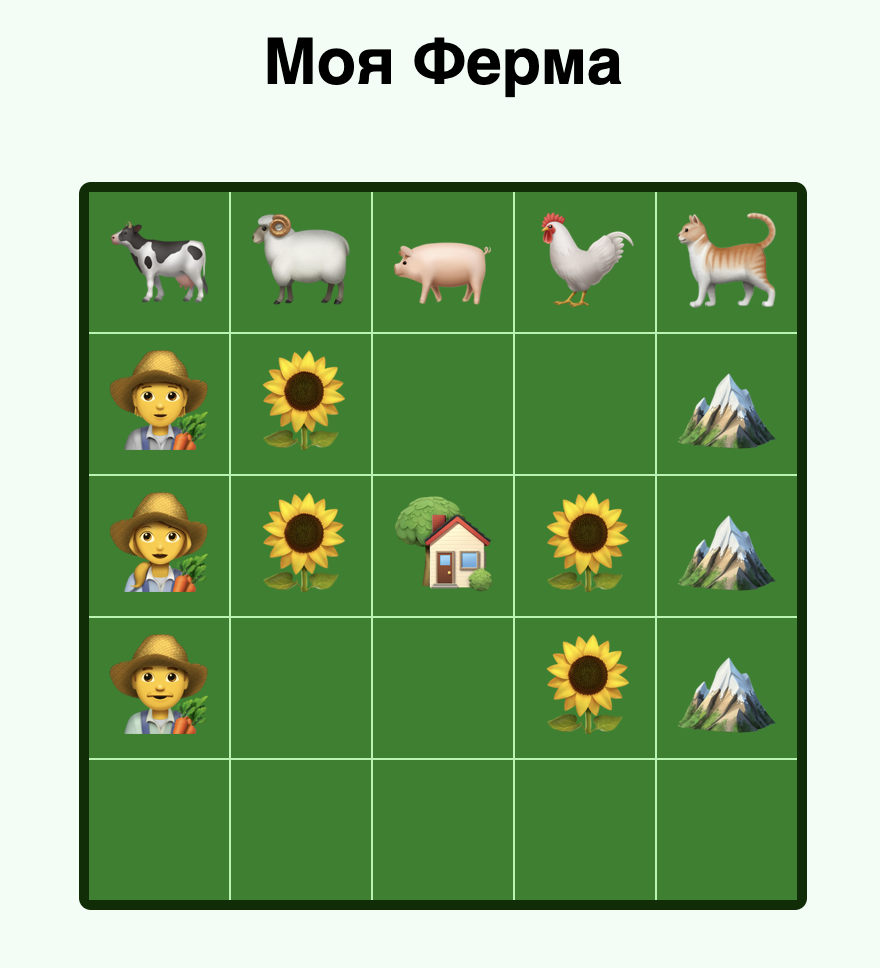
- Ліс. За допомогою спеціального методу видали останній рядок масиву. Далі, використавши інший метод, додай на його місце новий масив-рядок з деревами (🌲):
-
Тюльпани. Двічі використавши
метод splice, додай по два
тюльпани (🌷) у другому та
четвертому рядках (у єдиних
клітинках, які досі залишилися порожніми):
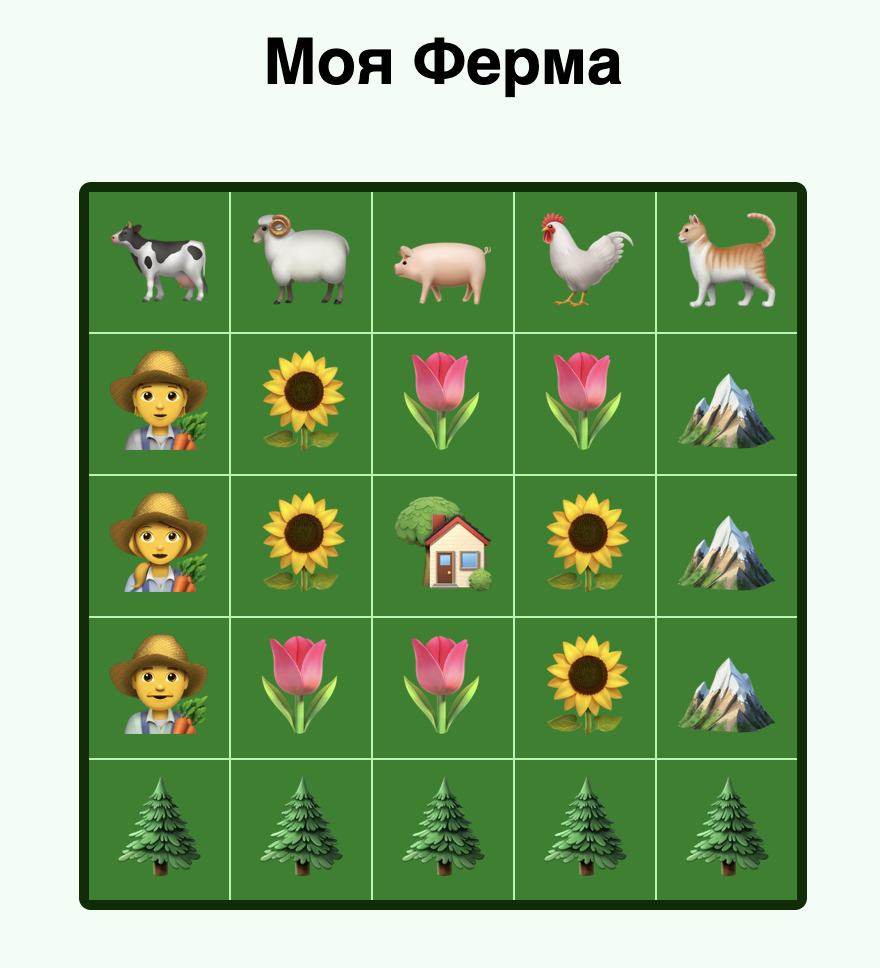
✧ Теорія:
Ітерація по 2D масиву
▶
Чому ми це вчимо?
Уяви, що твоя ігрова карта має розмір 100 x 100. Це 10 000 клітинок! Ми ж не будемо перевіряти кожну з них вручну, пишучи 10 000 разів координати, щоб знайти захований скарб. Нам потрібна автоматизація — ми маємо навчити комп'ютер самостійно "сканувати" весь світ гри. Оскільки двовимірний масив — це масиви всередині масиву, то для його сканування нам знадобиться цикл усередині іншого циклу (їх ще називають вкладеними циклами).
Властивість length у 2D масивах
Перед тим, як перебирати елементи, комп'ютеру потрібно дізнатися розміри масиву. У звичайному одновимірному масиві властивість length повертає загальну кількість елементів. А от у двовимірному масиві вона працює на двох рівнях:
- масив.length — показує кількість внутрішніх масивів, тобто скільки в масиві є рядків.
- масив[0].length — показує кількість елементів у першому рядку, тобто скільки в масиві є колонок.
const treasureMap = [
["🏖️", "🌴", "💎", "🌴"],
["🏖️", "🌴", "🏖️", "🏖️"],
];
console.log("Рядків:", treasureMap.length);
console.log("Колонок:", treasureMap[0].length);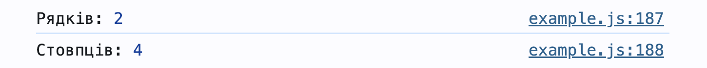
Далі розглянемо три різні способи ітерації по двовимірному масиву.
Спосіб 1: Класичний цикл for
Цей спосіб працює як навігатор. Сам по собі цикл не дістає елементи з масиву, він лише створює для нас числа-індекси (0, 1, 2...).
Зовнішній цикл генерує номер рядка (row), а внутрішній — номер колонки (col). Потім ми беремо ці номери, ставимо їх у квадратні дужки fruits[row][col] і кажемо комп'ютеру: "Піди за цими координатами і дістань те, що там лежить". Це ідеально, коли треба не лише знайти предмет, а й знати його точні координати.
const fruits = [
["🍎", "🍐", "🍏"],
["🍋", "🍊", "🥝"],
];// Перебираємо рядки
for (let row = 0; row < fruits.length; row++) {
console.log(`Рядок ${row}:`, fruits[row]);
}// Перебираємо рядки
for (let row = 0; row < fruits.length; row++) {
// Перебираємо клітинки в поточному рядку
for (let col = 0; col < fruits[row].length; col++) {
console.log(`Рядок ${row}, колонка ${col}:`, fruits[row][col]);
}
}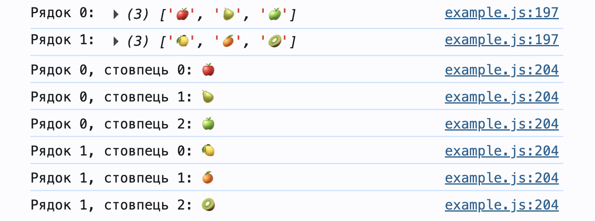
Спосіб 2: Цикл for...of
Якщо точні координати не потрібні, зручніше використати цикл for...of. Він читається як звичайна англійська мова і не потребує лічильників чи індексів. Цей цикл працює як магічна рука. Він автоматично, по черзі, витягає з масиву одразу цілий рядок і кладе його у змінну (яку ми самі назвали row). Потім внутрішній цикл так само по черзі витягає з цього рядка конкретне значення (фрукт) і кладе його у змінну cell. В результаті ми отримуємо сам елемент, але не знаємо, в якій клітинці він лежав.
// для кожного рядка масиву
for (let row of fruits) {
console.log(row);
// для кожної клітинки цього рядка
for (let cell of row) {
console.log(cell);
}
}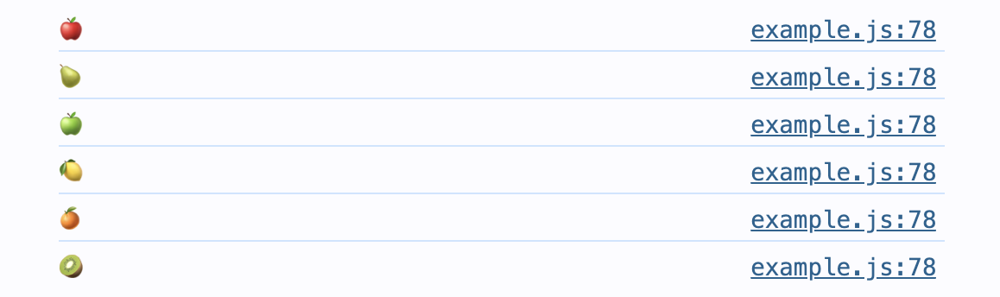
Спосіб 3: Метод forEach
forEach — це спеціальна команда, вбудована в масиви. Ми передаємо їй функцію, яка автоматично виконується для кожного елемента. Спочатку робимо це для кожного рядка, а потім — для кожної клітинки. Це стиль функціонального програмування. Функції можна використовувати як звичайні, так і стрілочні. За замовчуванням цей метод робить те саме, що й for...of: видає нам одразу готове значення (цілий рядок або сам фрукт).
fruits.forEach(function (row) {
console.log(row);
row.forEach(function (cell) {
console.log(cell);
});
});fruits.forEach((row) => {
console.log(row);
row.forEach((cell) => {
console.log(cell);
});
});Але що робити, якщо під час пошуку нам потрібно дізнатися ще й точні координати предмета? У методу forEach є прихована суперсила! Крім самого елемента (рядка чи клітинки), він може автоматично передавати нам ще й його індекс.
Для цього достатньо просто додати другу змінну в круглі дужки нашої функції (наприклад, rowIndex для номера рядка та colIndex для номера колонки). Тоді цей спосіб стає таким же потужним, як і класичний цикл for!
fruits.forEach((row, rowIndex) => {
row.forEach((cell, colIndex) => {
// Тепер ми знаємо і сам фрукт, і його точну адресу
console.log(`[${rowIndex}][${colIndex}] = ${cell}`);
});
});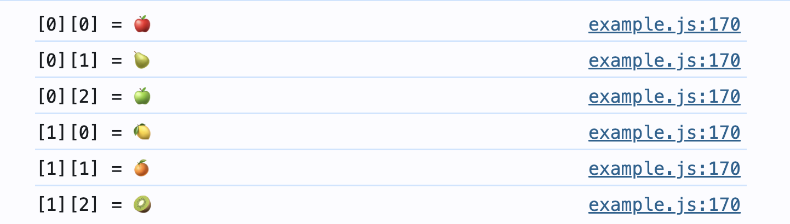
Тести
Перевір свої знання
1. Які два числа по черзі виведе цей код і що вони означають?
const board = [
[0, 0, 0, 0],
[0, 0, 0, 0]
];
console.log(board.length);
console.log(board[0].length);Відповідь
Виведе число 2 (кількість внутрішніх масивів, тобто рядків) та число 4 (кількість елементів у першому рядку, тобто колонок).
2. Програміст написав класичний подвійний цикл, щоб перевірити всі клітинки карти, але допустив дві типові помилки. Знайдеш їх?
for (let row = 0; row < map.length; row++) {
for (let col = 0; col < map.length; col++) {
console.log(map[row, col]);
}
}Відповідь
1. У внутрішньому циклі треба перевіряти довжину рядка
map[row].length (кількість
колонок), а не всього масиву
map.length.
2. Координати записані неправильно: замість одних дужок із
комою [row, col] потрібно
використовувати дві окремі пари дужок
[row][col].
✦ Завдання 3
▶
Тематика практики
Час застосувати знання на практиці! У цьому завданні ти проаналізуєш карту острова скарбів. Тобі доведеться дізнатися точні координати всіх діамантів, порахувати їхню загальну кількість, а також знайти загублену корону. Для цього ти використаєш усі три способи ітерації по двовимірному масиву.
Підготовка
Для цього завдання файли завантажувати не потрібно. Створи на своєму комп'ютері порожній index.html та підключи до нього файл скрипта. Тепер скопіюй цю велику карту скарбів у свій JS-код:
const treasureMap = [
["🏖️", "🌴", "🌴", "🏖️", "💎", "🌴"],
["🌴", "💎", "🏖️", "🏖️", "🌴", "🌴"],
["🏖️", "🏖️", "👑", "💎", "🏖️", "🌴"],
["💎", "🌴", "🌴", "🏖️", "🏖️", "🏖️"],
["🏖️", "🌴", "💎", "🌴", "🌴", "💎"]
];💡 Підказка: Як перевіряти скарби?
Незалежно від способу перебору, у внутрішньому циклі (коли ти вже дістався до конкретної клітинки) використовуй if, щоб перевірити, чи лежить в клітинці скарб.
Завдання
Завдання 3.1: Точні координати (Спосіб 1)
- Напиши класичний подвійний цикл for (з індексами row та col), який перебере всю карту treasureMap.
-
Якщо в клітинці лежить діамант (💎), виведи у консоль
повідомлення з його координатами:
"Діамант знайдено! Рядок: ..., колонка: ..."
Завдання 3.2: Підрахунок запасів (Спосіб 2)
- Створи змінну-лічильник (наприклад, diamondsCount) із початковим значенням 0.
- Напиши подвійний цикл for...of (спочатку дістаємо row, потім cell).
- Якщо знаходиш діамант (💎), збільшуй лічильник на 1.
-
Після завершення обох циклів виведи
результат у консоль:
"Усього знайдено діамантів: ..."
Завдання 3.3: Пошук Корони (Спосіб 3)
Ми знаємо, що десь на острові захована корона (👑), і нам терміново потрібні її координати!
- Використай метод forEach() для головного масиву, а потім всередині нього — ще один forEach() для рядка. Обов'язково передай у функції другі параметри для індексів (наприклад, rowIndex та colIndex).
-
Якщо знаходиш корону (👑), виведи у консоль її точну адресу:
"Корона захована тут: рядок ..., колонка ..."
Очікуваний результат:
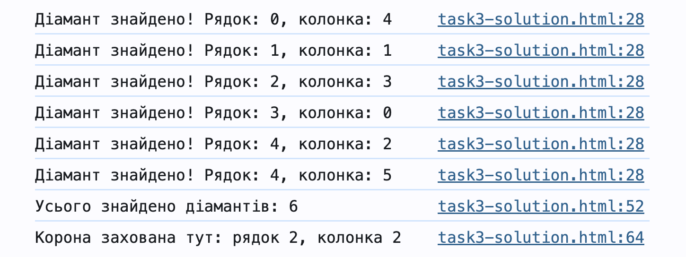